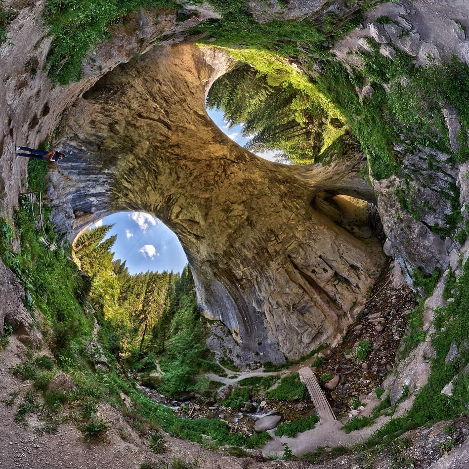

Чудните мостове
Чудните мостове, Скалните мостове са скален феномен, разположен е в карстовата долина на река Еркюприя в Западните Родопи на 1450 m надморска височина, в подножието на връх Голям Персенк.
